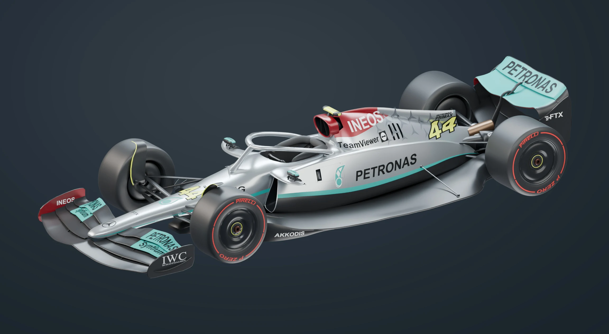
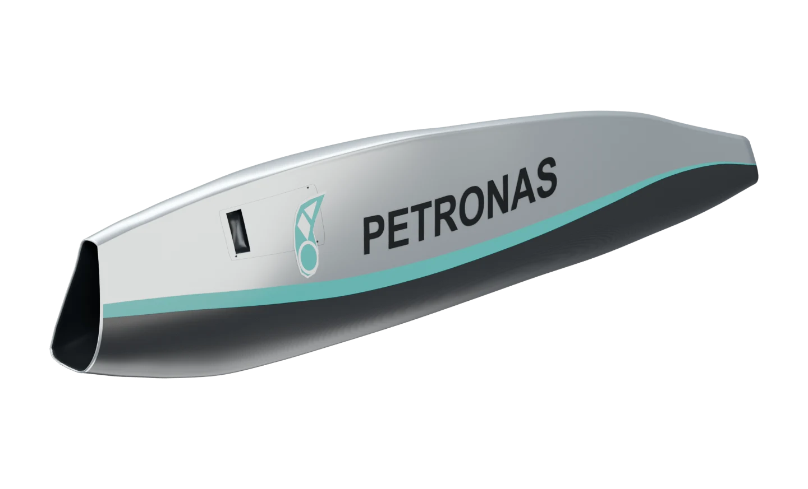
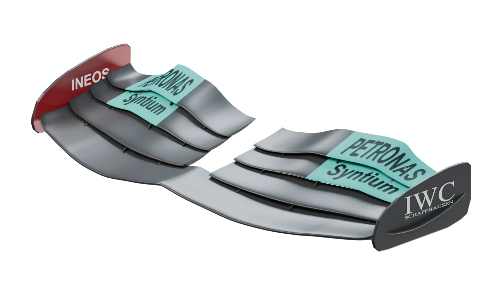
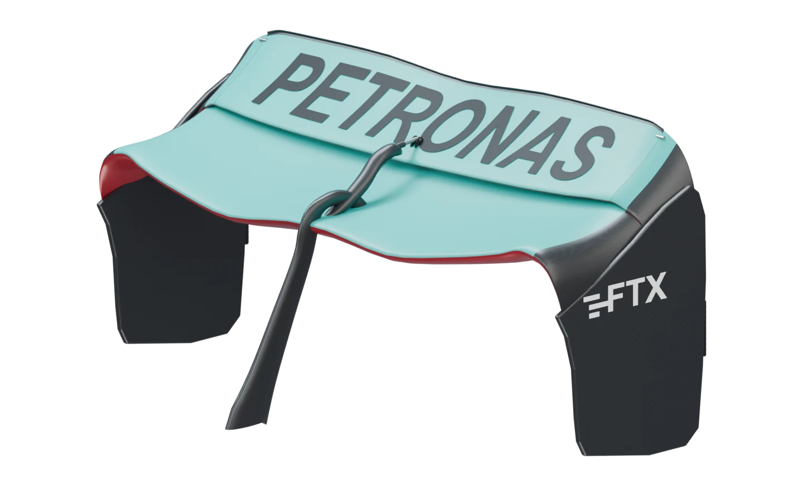
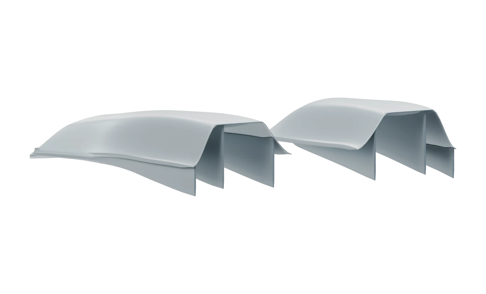

Formule 1 · Blender
Mercedes-AMG W13
Lewis Hamilton n° 44 · Grand Prix de Bahreïn 2022

Les détails aérodynamiques
Cette reconstruction reprend les formes visibles sur les photos de Bahreïn. Les conduits internes et les zones cachées du plancher sont estimés. Le volet DRS peut s’ouvrir jusqu’à 22° dans cet aperçu.







